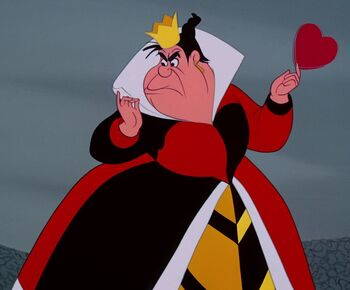
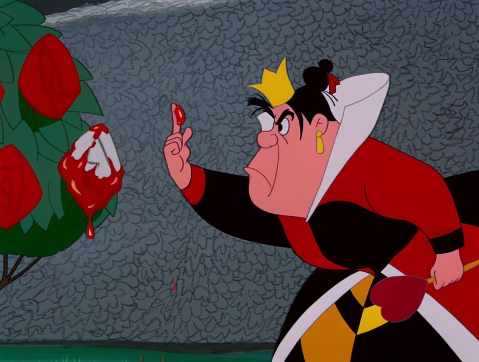

КОРОЛЕВА ЧЕРВЕЙ
Внешность
Королева выглядит как крупная черноволосая дама. На голове у неё маленькая корона. Она носит чёрно-красное платье и веер в виде сердца.

Характер
Характер Королевы в точности соответствует характеру оригинала - она так же легко впадает в ярость и решает проблемы самым простым способом - отрубанием головы.

Описание
Королева (Дама) Червей (англ. Queen of Hearts) — главная антагонистка диснеевского полнометражного мультфильма 1951 года «Алиса в Стране чудес». Она — деспотичная, вспыльчивая и жестокая правительница Страны чудес, которая всегда предпочитает решать все свои проблемы одним способом — отрубать головы тем, кто разгневал её.
В оригинальном мультфильме Королева Червей была анимирована Фрэнком Томасом и озвучена актрисой Верной Фелтон (в русском дубляже Ольгой Мугрычёвой).
Появления
Алиса в Стране чудес После марша карт появляется Королева. Сначала она производит благоприятное впечатление, но когда она видит покрашенные розы, то впадает в ярость. Выслушав обвинения садовников (каждый из них пытался обвинить другого), она пришла к единственному "правильному" заключению - отрубить головы всем. Мышиный дом Появляется вместе с остальными персонажами оригинала.